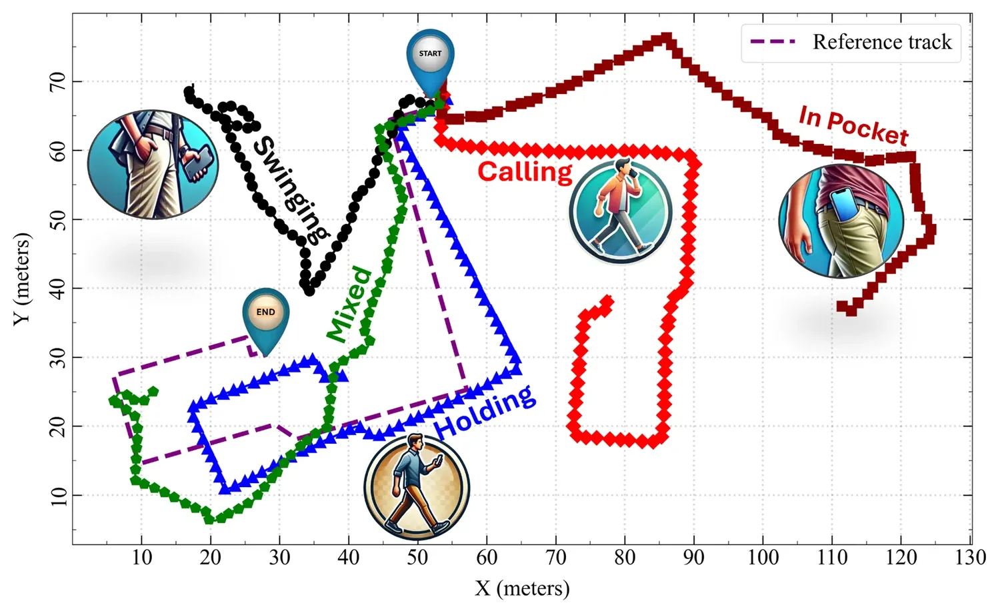

Hybrid Neural Network-Based PDR with Multi-Layer Heading Correction Across Smartphone Carrying Modes
Paper preview

Research story and quick reading guide
This paper addresses a very practical weakness of smartphone PDR: people do not carry phones in one fixed way. A device may be held while texting, placed in a pocket, used during a call, or swung in the hand. Each carrying mode changes the relationship between the phone’s sensor axes and the pedestrian’s true walking direction. Traditional PDR often assumes a stable orientation or a controlled carrying condition, but real users change modes naturally. The paper responds by proposing a hybrid neural-network-based PDR framework with multi-layer heading correction across carrying modes.
The research story is carrying-mode variability → learned mode recognition → heading correction → step/PDR integration → improved trajectory. This flow is important because heading is the core vulnerability of PDR. Step detection may estimate how far the user moves, but heading determines where that movement goes. If heading is wrong, the trajectory drifts even when step length is reasonable. By recognizing carrying modes and correcting heading in multiple layers, the system aims to make PDR more robust in realistic smartphone use.
The paper is valuable because it connects deep learning with classical pedestrian navigation. The neural-network component helps interpret sensor patterns associated with different carrying modes, while the PDR component uses corrected heading and motion information to estimate movement. This hybrid structure is useful because it does not replace PDR with a black-box model; instead, it uses learning to support the parts of PDR that are most sensitive to real user behavior.
A useful visualization is phone behavior → mode label → heading correction → trajectory correction. The mode label acts like a switch that informs the navigation engine how to interpret sensor data. Multi-layer correction then reduces heading error before it accumulates into large position drift. This makes the method relevant to both indoor positioning and wearable/mobile sensing.
The paper matters for deployment because controlled carrying assumptions are one reason laboratory PDR results can fail in daily use. A practical navigation system must tolerate natural phone handling. By focusing on carrying-mode-aware heading correction, the work supports more user-friendly and less intrusive smartphone positioning.
This paper should be cited when discussing smartphone PDR, carrying-mode recognition, deep learning for inertial navigation, heading correction, multi-sensor pedestrian navigation, and robust PDR under changing phone poses and real user behavior.
Extended summary
This paper combines neural network-based carrying-mode recognition with multi-layer heading correction to improve smartphone PDR across different device-use modes.
Key visual explanation
These selected visuals help readers understand the method quickly before reading the full paper.

When to cite this paper
- PDR robustness across smartphone carrying modes is studied
- deep learning is used for heading correction or motion-state recognition
- indoor navigation systems need device-pose adaptation
- smartphone sensor fusion is evaluated under practical user behavior
Keywords
PDRheading correctionsmartphone carrying modehybrid neural networkindoor navigationsensor fusion
Official link
https://doi.org/10.3390/s26082421
For publisher-restricted articles, link to the DOI or an allowed accepted manuscript rather than uploading a restricted PDF.
BibTeX
@article{Ye2026hybrid,
title = {Hybrid Neural Network-Based PDR with Multi-Layer Heading Correction Across Smartphone Carrying Modes},
author = {Junhua Ye and Anzhe Ye and Ahmed Mansour and Shusu Qiu and Zhenzhen Li and Xuanyu Qu},
year = {2026},
journal = {Sensors},
doi = {10.3390/s26082421},
}